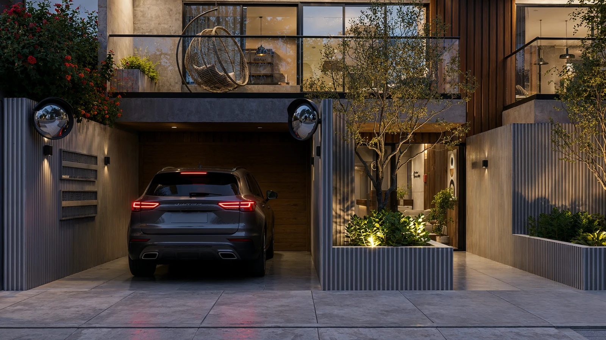

Explorar showroom ↗RM Promotora Inmobiliaria Vertical

PROYECTOS / VERTICALES
De la fachada a las plantas y los interiores. Descubre showrooms que ayudan a conocer un edificio y explorar las opciones que ofrece.
Explorar proyectos ↓UNA EXPERIENCIA A LA ESCALA DEL PROYECTO
La arquitectura atrae. Poder recorrerla y consultar su información permite entenderla mejor. Una misma experiencia conecta el edificio con sus departamentos y áreas comunes.
La fachada presenta el carácter del edificio. Los encuadres y la luz ayudan a comunicar su arquitectura antes de entrar.


Explorar showroom ↗RM Promotora Inmobiliaria Vertical
Explorar showroom ↗Sumac Vertical
 Explorar showroom ↗
Explorar showroom ↗Cima Prince Vertical
Explorar showroom ↗Prohouse Vertical
 Explorar showroom ↗
Explorar showroom ↗Kayen Vertical
Próximamente Vertical
INMOBILIARIAS QUE CONFÍAN EN RVISIOON


EL SIGUIENTE PASO
Conversemos sobre la arquitectura y la información que necesita tu proyecto para presentarse mejor.